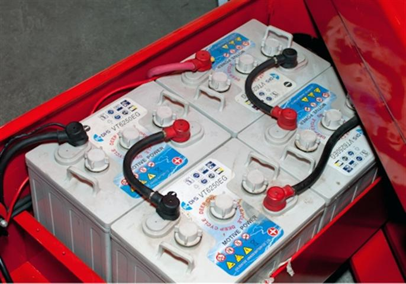
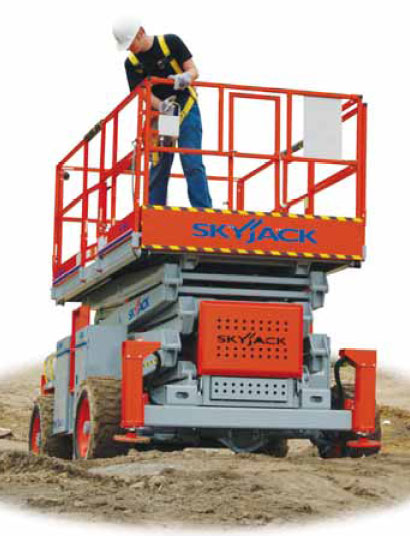
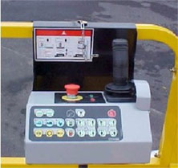

Назначение и устройство ножничного подъемника

Ножничный подъемник – это оборудование, которое предназначено для осуществления подъема людей и материалов при производстве строительных, монтажных, отделочных и других видов работ. Одно из преимуществ самоходных ножничных подъемников - это возможность эксплуатации как внутри помещений, так и при производстве работ на открытых строительных площадках. Ножничный подъемник является устройством с гидравлическим приводом. Гидравлический приводной механизм состоит из гидравлического насоса и дизельного либо электрического двигателя. Подъем и опускание платформы осуществляется при помощи гидроцилиндра и складной системы рычагов, крестообразно соединенных шарнирами (ножничный тип).
Электрические ножничные подъёмники
Ножничные подъемники с электрическим двигателем работают от тяговых аккумуляторных батарей (24В или 48В). Мощные тяговые батареи обеспечивают работу подъемника не менее 8 часов. Они более подходят для эксплуатации в закрытых помещениях на ровных или относительно ровных поверхностях, таких как: автосервисы, складские помещения, гипермаркеты и прочее, т.к. в отличии от дизельных подъемников они более компактные и манёвренные, отличаются бесшумностью, не имеют выброса отработанных газов, шины как правило цельнолитые из белого материала, не оставляющие следов на поверхности. Скорость передвижения таких подъемников 0,6-4,5 км/ч. Электрические ножничные подъемники в обязательном порядке оборудованы сетевым зарядным устройством для зарядки тяговых аккумуляторов, а также могут быть оборудованы датчиком уровня заряда аккумуляторных батарей.
Самоходные ножничные подъёмники

Самоходные ножничные подъемники с дизельным двигателем более выгодны при выполнении строительных,
монтажных, отделочных и других видов работ на открытых площадках , с плохой рабочей поверхностью. Как
правило, такие подъемники имеют большие вседорожные шины заполненные полиуретаном, что полностью
исключает возможность прокола на строительной площадке торчащей арматурой из земли, полный привод (4х4),
рабочую платформу с большой грузоподъемностью, гидравлические опоры (аутригеры). Наличие гидравлических
опор позволяет эксплуатировать подъемник на поверхностях с большими уклонами. Скорость передвижения по
строительной площадке 1,6-6,0 км/ч.
Гибридные ножничные подъёмники
Существуют ножничные подъемники в названии моделей которых есть приставки BE-Hybrid , Bi-Energy , Bi-Fuel - это значит, что подъемник оснащен двумя двигателями : дизельным и электрическим. Наличие двух двигателей делает подъемник более универсальным в использовании: его можно эксплуатировать как в закрытых помещениях, работая от электромотора, так и на строительных площадках, где нет возможности подзарядки тяговых аккумуляторных батарей. Bi-Fuel - двигатель подъемника может работать от разного вида топлива, зачастую это подъемники с бензиновым двигателем и заводской установкой для работы на газу.
Рабочая платформа ножничного подъемника

Рабочая платформа ножничного подъемника представляет собой открытую площадку с ограждениями по периметру. Зачастую, для увеличения размеров рабочей площадки, платформа подъемника оснащена дополнительными секциями (с одной или двух сторон) выдвигаемые в ручную или при помощи гидроцилиндра. Ножничные подъемники бывают как полноприводные (колесная формула 4х4), так и с приводом только на одну ось (колесная формула 4х2). В некоторых моделях подъемников с колесной формулой 4х4 может устанавливаться блокировка межколесного дифференциала, что позволяет увеличить проходимость подъемника по строительным площадкам с вязким, рыхлым грунтом.
Управление ножничным подъёмником
Управление ножничным подъемником осуществляется при помощи пульта. Как правило на подъемнике их два. Один пульт управления стационарно закреплен на шасси подъемника, на нем расположены: - на дизельных подъемниках: тумблер запуска дизельного двигателя, тумблер управления подъемом-опусканием рабочей платформы, счетчик моточасов, индикаторные лампы давления и уровня масла в двигателе, индикаторная лампа зарядки аккумулятора - на электрических подъемниках: тумблер управления подъемом-опусканием рабочей платформы, счетчик моточасов, индикатор уровня заряда аккумуляторных батарей. - Второй пульт является съемным и предназначен для управления подъемником из рабочей платформы. С него осуществляется запуск дизельного двигателя (для дизельных моделей), управление подъемом и опусканием гидравлических опор (при наличии этой функции), подъем и опускание рабочей платформы, управление движением подъемника по площадке. Все ножничные подъемники оснащены датчиком уклона рабочей поверхности, датчиком перегрузки и системой аварийного опускания рабочей платформы подъемника, что обеспечивает безопасность эксплуатации данных подъемников.
Наша компания продает и сдает в аренду ножничные подъёмники. Ознакомиться с
ассортиментом и условиями
сотрудничества вы можете, пройдя по нижеуказанным ссылкам:
Купить подъёмник
Взять подъёмник в аренду